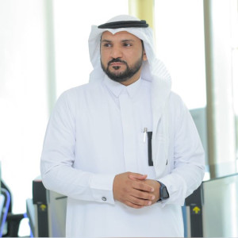

SAMI AL HUMAIDAN ALGHAMDI
Assistant Professor
A semiconductor researcher committed to achieving well-stated goals, motivated toward high-impact publications, and initiative team-leader. Expert in the micro/nanofabrication and the electrical characterization of Si and III-V semiconductors state-of-the-art devices. His research focuses on studying the oxide/semiconductor interface characteristics of novel high-k oxides integrated with Si, Ge, III-V, and wide bandgap material-based devices, including different MOS devices’ structures: MOSCAPs, 3D/2D MOSFETs, HEMT and MOSHEMTs, Negative-capacitance (NC) FETs, and Ferroelectric FETs, this is due the important role that they play in the devices’ performance and reliability. The fabrication process he is expert on two micro/nanofabrication methods: atomic layer deposition (ALD) for oxides depositions and eBeam lithography for devices’ structuring. Later on his PhD, he worked extensively on novel electrical characterization methods to assess these nano devices, including: Low frequency noise to prove NC concept, ultrafast pulsing methods, UV-based capacitance- and current-voltage measurements, and other reliability studies such as polarization fatigue in ferroelectric FETs. He is also fascinated by and involved in many entrepreneurship events, organizations and activates, both, self and with his students.
About Me:
-
Period:
2023 - Present
-
Address:
Chairman Office:
King Abdulaziz University, Jeddah.
Faculty of Engineering building, 3rd Floor.Faculty Office:
35D22 - ENG40A
-
Contact:
Phone: +966-012-6952000
Email: ssalghamdi2@kau.edu.sa